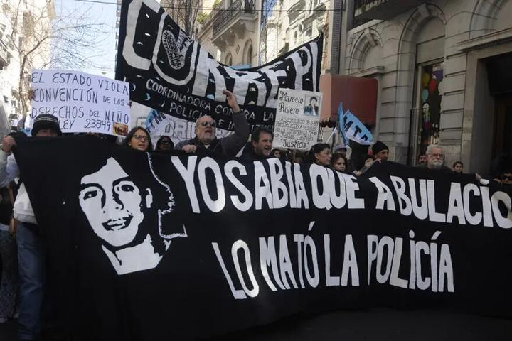

El Crimen de Walter Bulacio
El 19 de abril de 1991 marcó un punto de no retorno. Durante una presentación en el Estadio Obras, una razzia de la Policía Federal terminó con la detención ilegal de jóvenes que rondaban el lugar sin entrada. Entre ellos estaba Walter Bulacio, un adolescente de 17 años que fue brutalmente golpeado en la comisaría y falleció una semana después.
Este trágico suceso partió en dos la historia de Los Redondos y transformó radicalmente la relación entre el público del rocanrol y las fuerzas policiales. El caso Bulacio instauró un reclamo de justicia permanente, convirtiéndose en un emblema de la violencia institucional y moldeando la conciencia social de toda una generación de fanáticos que hizo de los recitales un espacio de resistencia.
